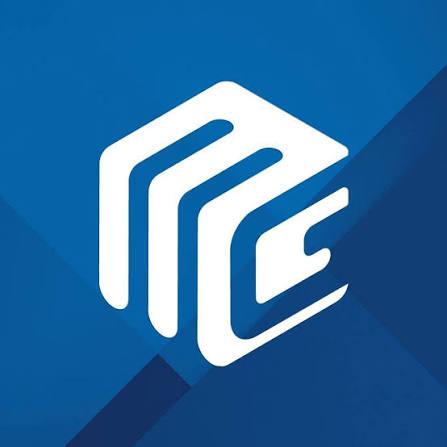

01 / GTM ENGINEERING
Build the growth system.
I connect market intelligence, targeting, messaging, workflows, and sales handoffs so teams can act on the right opportunities with the right context.
MARKETING LEADER & GTM ENGINEER
I help people-led solutions and technology businesses turn market insight into clear positioning, qualified demand, and a more connected path to revenue.
01 / EXPERTISE
Good marketing needs a clear commercial purpose. I bring the message, the channels, and the operating system together.
I connect market intelligence, targeting, messaging, workflows, and sales handoffs so teams can act on the right opportunities with the right context.
I bring positioning, content, campaigns, and follow-up into one journey that helps the right clients understand the value and take the next step.
For outsourcing, staffing, and recruitment businesses, I translate capabilities into a story about expertise, trust, capacity, and the teams clients need to grow.
I connect technical capabilities to business needs, with clear offers and useful content that help clients understand where technology can create value.
02 / MY APPROACH
My approach connects the decisions before a campaign with the conversations that happen after it.
Define the ideal client, their priorities, the buying context, and the problem worth solving.
Build a clear value proposition and a message that reflects how clients think and decide.
Bring content, campaigns, nurturing, and sales handoffs together around a shared goal.
Review lead quality, conversion, and revenue contribution, then use the findings to improve the system.
AI supports the work. People bring the judgement, relationships, and accountability.
03 / CAREER CONTEXT
My career spans recruitment, outsourcing, and technology, with work across marketing leadership, content, and go-to-market strategy.
Marketing leadership and communications for executive search, connecting business priorities with relevant client conversations.
Marketing and communications for recruitment process outsourcing, helping clients understand flexible support for their hiring needs.
GTM content leadership in staffing, translating service capabilities into clear, useful content for business audiences.
GTM content for technology services, connecting complex offerings to practical business needs.

Technology experience spanning advanced systems, software, and digital solutions.
04 / ABOUT ME
I'm Juan Paulo Galinato, or JP. I work at the intersection of marketing, people, and technology. I enjoy turning a complex business offer into something people can understand, trust, and act on.
For me, GTM Engineering means connecting strategy to execution: the data, tools, content, and handoffs that help marketing and sales work better together.
I believe in servant leadership. That means listening, removing obstacles, and helping the team do its best work while staying accountable for results.
05 / THE BLOG
Thoughts on GTM Engineering, demand generation, people-led solutions, and technology.
No articles published yet. This space will feature perspectives on GTM Engineering, demand generation, people-led solutions, and technology.
06 / LET'S CONNECT
Leading a people-led solutions or technology business? Exploring a marketing leadership conversation? I'd be happy to connect.
Find me on LinkedIn